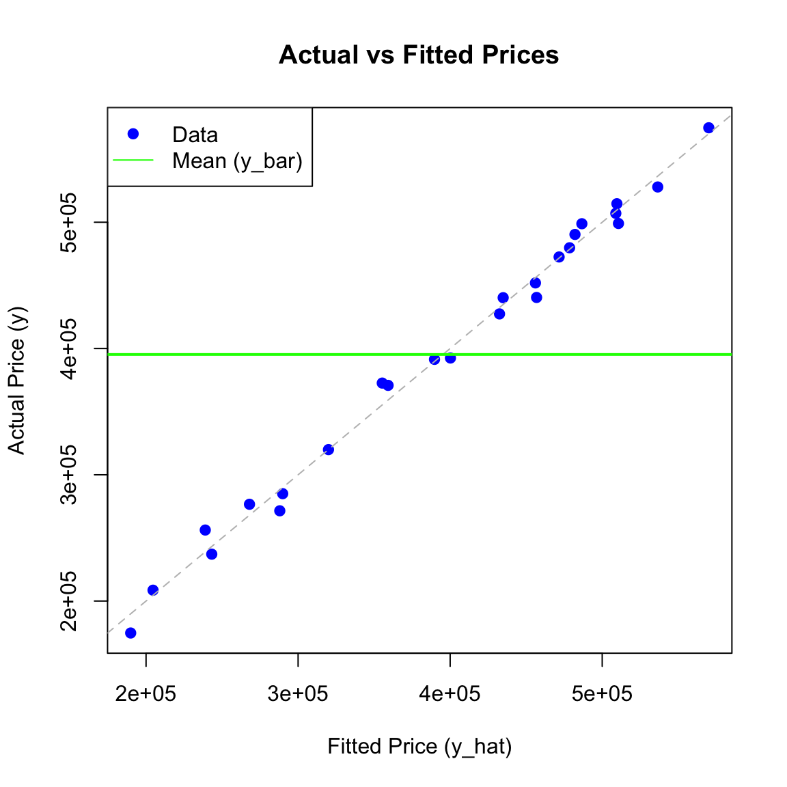

Scenario 1: Significant regression effect (\(\beta_1 ot= 0\)). The mean vector projects significantly onto the predictor space.
6 Estimation in Multiple Linear Regression
6.1 Linear Models and Least Square Estimator
6.1.1 Assumptions in Linear Models
Suppose that on a random sample of \(n\) units (patients, animals, trees, etc.) we observe a response variable \(Y\) and explanatory variables \(X_{1},...,X_{k}\). Our data are then \((y_{i},x_{i1},...,x_{ik})\), \(i=1,...,n\), or in vector/matrix form \(y, x_{1},...,x_{k}\) where \(y=(y_{1},...,y_{n})\) and \(x_{j}=(x_{1j},...,x_{nj})^{T}\) or \(y, X\) where \(X=(x_{1},...,x_{k})\).
Either by design or by conditioning on their observed values, \(x_{1},...,x_{k}\) are regarded as vectors of known constants. The linear model in its classical form makes the following assumptions:
Assumptions on Linear Models
A1. (Additive Error) \(y=\mu+e\) where \(e=(e_{1},...,e_{n})^{T}\) is an unobserved random vector with \(E(e)=0\). This implies that \(\mu=E(y)\) is the unknown mean of \(y\).
A2. (Linearity) \(\mu=\beta_{1}x_{1}+\cdot\cdot\cdot+\beta_{k}x_{k}=X\beta\) where \(\beta_{1},...,\beta_{k}\) are unknown parameters. This assumption says that \(E(y)=\mu\in\text{Col}(X)\) (lies in the column space of \(X\)); i.e., it is a linear combination of explanatory vectors \(x_{1},...,x_{k}\) with coefficients the unknown parameters in \(\beta=(\beta_{1},...,\beta_{k})^{T}\). Note that it is linear in \(\beta_{1},...,\beta_{k}\), not necessarily in the \(x\)’s.
A3. (Independence) \(e_{1},...,e_{n}\) are independent random variables (and therefore so are \(y_{1},...,y_{n})\).
A4. (Homoscedasticity) \(e_{1},...,e_{n}\) all have the same variance \(\sigma^{2}\); that is, \(\text{Var}(e_{1})=\cdot\cdot\cdot=\text{Var}(e_{n})=\sigma^{2}\) which implies \(\text{Var}(y_{1})=\cdot\cdot\cdot=\text{Var}(y_{n})=\sigma^{2}\).
A5. (Normality) \(e\sim N_{n}(0,\sigma^{2}I_{n})\).
6.1.2 Matrix Formulation
The model can be written algebraically as: \[y_{i}=\beta_{0}+\beta_{1}x_{i1}+\beta_{2}x_{i2}+\cdot\cdot\cdot+\beta_{k}x_{ik}, \quad i=1,...,n\]
Or in matrix notation: \[ \begin{pmatrix} y_{1}\\ y_{2}\\ \vdots\\ y_{n} \end{pmatrix} = \begin{pmatrix} 1 & x_{11} & x_{12} & \cdot\cdot\cdot & x_{1k}\\ 1 & x_{21} & x_{22} & \cdot\cdot\cdot & x_{2k}\\ \vdots & \vdots & \vdots & \vdots & \vdots\\ 1 & x_{n1} & x_{n2} & \cdot\cdot\cdot & x_{nk} \end{pmatrix} \begin{pmatrix} \beta_{0}\\ \beta_{1}\\ \vdots\\ \beta_{k} \end{pmatrix} + \begin{pmatrix} e_{1}\\ e_{2}\\ \vdots\\ e_{n} \end{pmatrix} \]
This is expressed compactly as: \[y=X\beta+e\] where \(X\) is the design matrix, and \(e \sim N_n(0, \sigma^2 I)\). Alternatively: \[y=\beta_{0}j_{n}+\beta_{1}x_{1}+\cdot\cdot\cdot+\beta_{k}x_{k}+e\]
Taken together, all five assumptions can be stated more succinctly as: \[y\sim N_{n}(X\beta,\sigma^{2}I)\] with the mean vector \(\mu_{y}=X\beta\in \text{Col}(X)\).
Important
We will first consider the case that \(\text{rank}(X)=k+1\).
6.1.3 Least Squares Estimator of \(\beta\) and Fitted Value \(\hat Y\)
Definition 6.1 (Least Squares Estimator) The Least Squares Estimator (LSE) of \(\beta\), denoted as \(\hat{\beta}\), is the vector that minimizes the Sum of Squared Errors (SSE), which measures the discrepancy between the observed responses \(y\) and the fitted values \(X\hat{\beta}\). \[ Q(\beta) = \sum_{i=1}^n (y_i - x_i^T \beta)^2 = (y - X\beta)'(y - X\beta) \]
We can derive the closed-form solution for \(\hat{\beta}\) using the geometry of projections discussed in previous chapters.
1. Obtaining \(\hat Y\)
In the linear model \(y = X\beta + e\), the systematic component (the mean \(E[y]\)) is constrained to lie in the column space of \(X\), denoted as \(\text{Col}(X)\). We seek the vector in \(\text{Col}(X)\) that is “closest” to the observed data vector \(y\). As established in the theory of projections, this closest vector is the orthogonal projection of \(y\) onto \(\text{Col}(X)\). Let \(\hat{y}\) denote this fitted value vector. Using the explicit formula for the projection matrix \[H = X(X'X)^{-1}X',\] we have: \[ \hat{y} = Hy = X(X'X)^{-1}X' y.\]
2. Obtaining \(\hat{\beta}\) by Solving \(x\beta = \hat{y}\)
Since the fitted vector \(\hat{y}\) is a projection onto \(\text{Col}(X)\), it must lie entirely within that column space. This guarantees that the linear system for the coefficients \(\hat{\beta}\) is consistent (has an exact solution): \[ X\hat{\beta} = \hat{y} \]
To isolate \(\hat{\beta}\), we pre-multiply both sides by the left pseudo-inverse of \(X\), which is \((X'X)^{-1}X'\):
\[ \begin{aligned} (X'X)^{-1}X' (X\hat{\beta}) &= (X'X)^{-1}X' \hat{y} \\ \underbrace{(X'X)^{-1}(X'X)}_{I} \hat{\beta} &= (X'X)^{-1}X' \hat{y} \end{aligned} \]
This gives us the estimator expressed in terms of the fitted values:
\[ \boxed{\hat{\beta} = (X'X)^{-1}X' \hat{y}} \]
However, we typically calculate the estimator from the observed data \(y\). Recall that because \(\hat{y}\) is an orthogonal projection, the difference \(y - \hat{y}\) is orthogonal to \(X\). This implies \(X'\hat{y} = X'y\). Substituting this into the equation above yields the standard closed-form solution:
\[ \boxed{\hat{\beta} = (X'X)^{-1}X'y} \]
6.1.4 Properties of the Estimator \(\hat \beta\)
Theorem 6.1 (Unbiasedness of \(\hat \beta\)) If \(E(y)=X\beta\), then \(\hat{\beta}\) is an unbiased estimator for \(\beta\).
Proof. \[ \begin{aligned} E(\hat{\beta}) &= E[(X^{\prime}X)^{-1}X^{\prime}y] \\ &= (X^{\prime}X)^{-1}X^{\prime}E(y) \quad \text{[using linearity of expectation]} \\ &= (X^{\prime}X)^{-1}X^{\prime}X\beta \\ &= \beta \end{aligned} \]
Theorem 6.2 (Variance of \(\hat \beta\)) If \(\text{Var}(y)=\sigma^{2}I\), the covariance matrix for \(\hat{\beta}\) is given by \(\sigma^{2}(X^{\prime}X)^{-1}\).
Proof. \[ \begin{aligned} \text{Var}(\hat{\beta}) &= \text{Var}[(X^{\prime}X)^{-1}X^{\prime}y] \\ &= (X^{\prime}X)^{-1}X^{\prime}\text{Var}(y)[(X^{\prime}X)^{-1}X^{\prime}]^{\prime} \quad \text{[using } \text{Var}(Ay) = A \text{Var}(y) A'] \\ &= (X^{\prime}X)^{-1}X^{\prime}(\sigma^{2}I)X(X^{\prime}X)^{-1} \\ &= \sigma^{2}(X^{\prime}X)^{-1}X^{\prime}X(X^{\prime}X)^{-1} \\ &= \sigma^{2}(X^{\prime}X)^{-1} \end{aligned} \]
Note: These theorems require no assumption of normality.
6.2 Best Linear Unbiased Estimator (BLUE)
Theorem 6.3 (Gauss-Markov Theorem) If \(E(y)=X\beta\) and \(\text{Var}(y)=\sigma^{2}I\), the least-squares estimators \(\hat{\beta}_{j}, j=0,1,...,k\) have minimum variance among all linear unbiased estimators.
Proof. We consider a linear estimator \(Ay\) of \(\beta\) and seek the matrix \(A\) for which \(Ay\) is a minimum variance unbiased estimator.
1. Unbiasedness Condition: In order for \(Ay\) to be an unbiased estimator of \(\beta\), we must have \(E(Ay)=\beta\). Using the assumption \(E(y)=X\beta\), this is expressed as: \[E(Ay) = A E(y) = AX\beta = \beta\] which implies the condition \(AX=I_{k+1}\) since the relationship must hold for any \(\beta\).
2. Minimizing Variance: The covariance matrix for the estimator \(Ay\) is: \[\text{Var}(Ay) = A \text{Var}(y) A' = A(\sigma^2 I) A' = \sigma^2 AA'\] We need to choose \(A\) (subject to \(AX=I\)) so that the diagonal elements of \(AA'\) are minimized.
To relate \(Ay\) to \(\hat{\beta}=(X'X)^{-1}X'y\), we define \(\hat{A} = (X'X)^{-1}X'\) and write \(A = (A - \hat{A}) + \hat{A}\). Then: \[AA' = [(A - \hat{A}) + \hat{A}] [(A - \hat{A}) + \hat{A}]'\] Expanding this, the cross terms vanish because \((A - \hat{A})\hat{A}' = A\hat{A}' - \hat{A}\hat{A}'\). Note that \(\hat{A}\hat{A}' = (X'X)^{-1}X'X(X'X)^{-1} = (X'X)^{-1}\). Also, \(A\hat{A}' = A X (X'X)^{-1} = I (X'X)^{-1} = (X'X)^{-1}\) (since \(AX=I\)). Thus, \((A - \hat{A})\hat{A}' = 0\).
The expansion simplifies to: \[AA' = (A - \hat{A})(A - \hat{A})' + \hat{A}\hat{A}'\] The matrix \((A - \hat{A})(A - \hat{A})'\) is positive semidefinite, meaning its diagonal elements are non-negative. To minimize the diagonal of \(AA'\), we must set \(A - \hat{A} = 0\), which implies \(A = \hat{A}\).
Thus, the minimum variance estimator is: \[Ay = (X'X)^{-1}X'y = \hat{\beta}\]
6.2.1 Notes on Gauss-markov
Distributional Generality: The remarkable feature of the Gauss-Markov theorem is that it holds for any distribution of \(y\); normality is not required. The only assumptions used are linearity (\(E(y)=X\beta\)) and homoscedasticity (\(\text{Var}(y)=\sigma^2 I\)).
Extension to All Linear Combinations: The theorem extends beyond just the parameter vector \(\beta\) to any linear combination of the parameters.
Corollary 6.1 (BLUE for All Linear Combinations) If \(E(y)=X\beta\) and \(\text{Var}(y)=\sigma^{2}I\), the best linear unbiased estimator of the scalar \(a'\beta\) is \(a'\hat{\beta}\), where \(\hat{\beta}\) is the least-squares estimator.
Proof. Let \(\tilde{\beta} = Ay\) be any other linear unbiased estimator of \(\beta\). The variance of the linear combination \(a'\tilde{\beta}\) is: \[ \frac{1}{\sigma^2}\text{Var}(a'\tilde{\beta}) = \frac{1}{\sigma^2}\text{Var}(a'Ay) = a'AA'a \] From the proof of the Gauss-Markov theorem, we established that \(AA' = (A-\hat{A})(A-\hat{A})' + (X'X)^{-1}\) where \(\hat{A} = (X'X)^{-1}X'\). Substituting this into the variance equation: \[ a'AA'a = a'(A-\hat{A})(A-\hat{A})'a + a'(X'X)^{-1}a \] The term \(a'(A-\hat{A})(A-\hat{A})'a\) is a quadratic form with a positive semidefinite matrix, so it is always non-negative. Therefore: \[ a'AA'a \ge a'(X'X)^{-1}a = \frac{1}{\sigma^2}\text{Var}(a'\hat{\beta}) \] The variance is minimized when \(A=\hat{A}\) (specifically when the first term is zero), proving that \(a'\hat{\beta}\) has the minimum variance among all linear unbiased estimators.
- Scaling Invariance: The predictions made by the model are invariant to the scaling of the explanatory variables.
Theorem 6.4 (Scaling Explanatory Variables) If \(x=(1,x_{1},...,x_{k})'\) and \(z=(1,c_{1}x_{1},...,c_{k}x_{k})'\), then the fitted values are identical: \(\hat{y} = \hat{\beta}'x = \hat{\beta}_{z}'z\).
Proof. Let \(D = \text{diag}(1, c_1, ..., c_k)\) such that the design matrix is transformed to \(Z = XD\). The LSE for the transformed data is: \[ \begin{aligned} \hat{\beta}_z &= (Z'Z)^{-1}Z'y = [(XD)'(XD)]^{-1}(XD)'y \\ &= D^{-1}(X'X)^{-1}(D')^{-1}D'X'y \\ &= D^{-1}(X'X)^{-1}X'y = D^{-1}\hat{\beta} \end{aligned} \] . Then, the prediction is: \[ \hat{\beta}_z' z = (D^{-1}\hat{\beta})' (Dx) = \hat{\beta}' (D^{-1})' D x = \hat{\beta}'x \] .
6.2.1.1 Limitations: Restriction to Unbiased Estimators
It is crucial to recognize that the Gauss-Markov theorem only guarantees optimality within the class of linear and unbiased estimators.
- Assumption Sensitivity: If the assumptions of linearity (\(E(y)=X\beta\)) and homoscedasticity (\(\text{Var}(y)=\sigma^2 I\)) do not hold, \(\hat{\beta}\) may be biased or may have a larger variance than other estimators.
- Unbiasedness Constraint: The theorem does not compare \(\hat{\beta}\) to biased estimators. It is possible for a biased estimator (e.g., shrinkage estimators) to have a smaller Mean Squared Error (MSE) than the BLUE by accepting some bias to significantly reduce variance. The LSE is only “best” (minimum variance) among those estimators that satisfy the unbiasedness constraint.
6.3 Estimator of Error Variance
We estimate \(\sigma^{2}\) by the residual mean square:
Definition 6.2 (Residual Variance Estimator) \[s^{2} = \frac{1}{n-k-1} \sum_{i=1}^{n}(y_{i}-x_{i}'\hat{\beta})^{2} = \frac{\text{SSE}}{n-k-1}\] where \(\text{SSE} = (y-X\hat{\beta})'(y-X\hat{\beta})\).
Alternatively, SSE can be written as: \[\text{SSE} = y'y - \hat{\beta}'X'y\] This is often useful for computation (\(y'y\) is the total sum of squares of the raw data).
6.3.1 Unbiasedness of \(s^2\)
Theorem 6.5 (Unbiasedness of s-squared) If \(s^{2}\) is defined as above, and if \(E(y)=X\beta\) and \(\text{Var}(y)=\sigma^{2}I\), then \(E(s^{2})=\sigma^{2}\).
Proof. We use the Hat Matrix \(H = X(X'X)^{-1}X'\), which projects \(y\) onto \(\text{Col}(X)\). Thus, \(\hat{y} = Hy\). The residuals are \(y - \hat{y} = (I - H)y\). The Sum of Squared Errors is: \[\text{SSE} = \|(I-H)y\|^2 = y'(I-H)'(I-H)y\] Since \(H\) is symmetric and idempotent, \((I-H)\) is also symmetric and idempotent. Thus: \[\text{SSE} = y'(I-H)y\]
To find the expectation, we use the trace trick for quadratic forms: \(E[y'Ay] = \text{tr}(A\text{Var}(y)) + E[y]'A E[y]\). \[ \begin{aligned} E(\text{SSE}) &= E[y'(I-H)y] \\ &= \text{tr}((I-H)\sigma^2 I) + (X\beta)'(I-H)(X\beta) \\ &= \sigma^2 \text{tr}(I-H) + \beta'X'(I-H)X\beta \end{aligned} \] Trace Term: \(\text{tr}(I_n - H) = \text{tr}(I_n) - \text{tr}(H) = n - (k+1)\), since \(\text{tr}(H) = \text{tr}(X(X'X)^{-1}X') = \text{tr}((X'X)^{-1}X'X) = \text{tr}(I_{k+1}) = k+1\).
Non-centrality Term: Since \(HX = X\), we have \((I-H)X = 0\). Therefore, the second term vanishes: \(\beta'X'(I-H)X\beta = 0\).
Combining these: \[E(\text{SSE}) = \sigma^2(n - k - 1)\] Dividing by the degrees of freedom \((n-k-1)\), we get \(E(s^2) = \sigma^2\).
6.4 Distributions Under Normality
If we add Assumption A5 (\(y \sim N_n(X\beta, \sigma^2 I)\)), we can derive the exact sampling distributions.
Corollary 6.2 (Estimated Covariance of Beta) An unbiased estimator of \(\text{Cov}(\hat{\beta})\) is given by: \[\widehat{\text{Cov}}(\hat{\beta}) = s^{2}(X'X)^{-1}\]
Theorem 6.6 (Sampling Distributions) Under assumptions A1-A5:
- \(\hat{\beta} \sim N_{k+1}(\beta, \sigma^{2}(X'X)^{-1})\).
- \((n-k-1)s^{2}/\sigma^{2} \sim \chi^{2}(n-k-1)\).
- \(\hat{\beta}\) and \(s^{2}\) are independent.
Proof. Part (i): Since \(\hat{\beta} = (X'X)^{-1}X'y\) is a linear transformation of the normal vector \(y\), it is also normally distributed. We already established its mean and variance in Theorem 6.1 and Theorem 6.2.
Part (ii): We showed \(\text{SSE} = y'(I-H)y\). Since \((I-H)\) is idempotent with rank \(n-k-1\), and \((I-H)X\beta = 0\), by the theory of quadratic forms in normal variables, \(\text{SSE}/\sigma^2 \sim \chi^2(n-k-1)\).
Part (iii): \(\hat{\beta}\) depends on \(Hy\) (or \(X'y\)), while \(s^2\) depends on \((I-H)y\). Since \(H(I-H) = H - H^2 = 0\), the linear forms defining the estimator and the residuals are orthogonal. For normal vectors, zero covariance implies independence.
6.5 Maximum Likelihood Estimator (MLE)
Theorem 6.7 (MLE for Linear Regression) If \(y \sim N_n(X\beta, \sigma^2 I)\), the Maximum Likelihood Estimators are: \[ \hat{\beta}_{\text{MLE}} = (X'X)^{-1}X'y \] \[ \hat{\sigma}^2_{\text{MLE}} = \frac{1}{n}(y - X\hat{\beta})'(y - X\hat{\beta}) = \frac{\text{SSE}}{n} \]
Proof. The log-likelihood function is: \[ \ln L(\beta, \sigma^2) = -\frac{n}{2}\ln(2\pi) - \frac{n}{2}\ln(\sigma^2) - \frac{1}{2\sigma^2}(y - X\beta)'(y - X\beta) \] Maximizing this with respect to \(\beta\) is equivalent to minimizing the quadratic term \((y - X\beta)'(y - X\beta)\), which yields the Least Squares Estimator. Differentiating with respect to \(\sigma^2\) and setting to zero yields \(\hat{\sigma}^2 = \text{SSE}/n\).
Note: The MLE for \(\sigma^2\) is biased (denominator \(n\)), whereas \(s^2\) is unbiased (denominator \(n-k-1\)).
6.6 Linear Models in Centered Form
The regression model can be written in a centered form by subtracting the means of the explanatory variables: \[y_{i}=\alpha+\beta_{1}(x_{i1}-\overline{x}_{1})+\beta_{2}(x_{i2}-\overline{x}_{2})+\cdot\cdot\cdot+\beta_{k}(x_{ik}-\overline{x}_{k})+e_{i}\] for \(i=1,...,n\), where the intercept term is adjusted: \[\alpha=\beta_{0}+\beta_{1}\overline{x}_{1}+\beta_{2}\overline{x}_{2}+\cdot\cdot\cdot+\beta_{k}\overline{x}_{k}\] and \(\overline{x}_{j}=\frac{1}{n}\sum_{i=1}^{n}x_{ij}\).
6.6.1 Matrix Formulation
In matrix form, the equivalence between the original model and the centered model is: \[y = X\beta + e = (j_n, X_c)\begin{pmatrix} \alpha \\ \beta_{1} \end{pmatrix} + e\] where \(\beta_{1}=(\beta_{1},...,\beta_{k})^{T}\) represents the slope coefficients, and \(X_c\) is the centered design matrix: \[X_c = (I - P_{j_n})X_1\] Here, \(X_1\) consists of the original columns of \(X\) excluding the intercept column.
To see the structure of \(X_c\), we first calculate the projection of the data onto the intercept space, \(P_{j_n}X_1\): \[ \begin{aligned} P_{j_n}X_1 &= \frac{1}{n}j_n j_n' X_1 \\ &= \begin{pmatrix} 1/n & 1/n & \cdots & 1/n \\ 1/n & 1/n & \cdots & 1/n \\ \vdots & \vdots & \ddots & \vdots \\ 1/n & 1/n & \cdots & 1/n \end{pmatrix} \begin{pmatrix} x_{11} & x_{12} & \cdots & x_{1k} \\ x_{21} & x_{22} & \cdots & x_{2k} \\ \vdots & \vdots & \ddots & \vdots \\ x_{n1} & x_{n2} & \cdots & x_{nk} \end{pmatrix} \\ &= \begin{pmatrix} \bar{x}_1 & \bar{x}_2 & \cdots & \bar{x}_k \\ \bar{x}_1 & \bar{x}_2 & \cdots & \bar{x}_k \\ \vdots & \vdots & \ddots & \vdots \\ \bar{x}_1 & \bar{x}_2 & \cdots & \bar{x}_k \end{pmatrix} \end{aligned} \] This results in a matrix where every row is the vector of column means. Subtracting this from \(X_1\) gives \(X_c\): \[ \begin{aligned} X_c &= X_1 - P_{j_n}X_1 \\ &= \begin{pmatrix} x_{11} & x_{12} & \cdots & x_{1k} \\ x_{21} & x_{22} & \cdots & x_{2k} \\ \vdots & \vdots & \ddots & \vdots \\ x_{n1} & x_{n2} & \cdots & x_{nk} \end{pmatrix} - \begin{pmatrix} \bar{x}_1 & \bar{x}_2 & \cdots & \bar{x}_k \\ \bar{x}_1 & \bar{x}_2 & \cdots & \bar{x}_k \\ \vdots & \vdots & \ddots & \vdots \\ \bar{x}_1 & \bar{x}_2 & \cdots & \bar{x}_k \end{pmatrix} \\ &= \begin{pmatrix} x_{11} - \bar{x}_1 & x_{12} - \bar{x}_2 & \cdots & x_{1k} - \bar{x}_k \\ x_{21} - \bar{x}_1 & x_{22} - \bar{x}_2 & \cdots & x_{2k} - \bar{x}_k \\ \vdots & \vdots & \ddots & \vdots \\ x_{n1} - \bar{x}_1 & x_{n2} - \bar{x}_2 & \cdots & x_{nk} - \bar{x}_k \end{pmatrix} \end{aligned} \]
6.6.2 Estimation in Centered Form
Because the column space of the intercept \(j_n\) is orthogonal to the columns of \(X_c\) (since columns of \(X_c\) sum to zero), the cross-product matrix becomes block diagonal: \[ \begin{pmatrix} j_n' \\ X_c' \end{pmatrix} (j_n, X_c) = \begin{pmatrix} j_n'j_n & j_n'X_c \\ X_c'j_n & X_c'X_c \end{pmatrix} = \begin{pmatrix} n & 0 \\ 0 & X_c'X_c \end{pmatrix} \]
Theorem 6.8 (Centered Estimators) The least squares estimators for the centered parameters are: \[ \begin{pmatrix} \hat{\alpha} \\ \hat{\beta}_{1} \end{pmatrix} = \begin{pmatrix} n & 0 \\ 0 & X_c'X_c \end{pmatrix}^{-1} \begin{pmatrix} j_n'y \\ X_c'y \end{pmatrix} = \begin{pmatrix} \bar{y} \\ (X_c'X_c)^{-1}X_c'y \end{pmatrix} \] Thus:
- \(\hat{\alpha} = \bar{y}\) (The sample mean of \(y\)).
- \(\hat{\beta}_{1} = S_{xx}^{-1}S_{xy}\), using the sample covariance notations.
Recovering the original intercept: \[ \hat{\beta}_0 = \hat{\alpha} - \hat{\beta}_1 \bar{x}_1 - \dots - \hat{\beta}_k \bar{x}_k = \bar{y} - \hat{\beta}_{1}'\bar{x} \]
6.7 Sum of Squares Decomposition
We partition the total variation based on the orthogonal subspaces.
Definition 6.3 (Sum of Squares Components) The total variation is decomposed as \(\text{SST} = \text{SSR} + \text{SSE}\).
Total Sum of Squares (SST): The squared length of the centered response vector. \[\text{SST} = \|y - \bar{y}j_n\|^2 = \|(I - P_{j_n})y\|^2\]
Regression Sum of Squares (SSR): The variation explained by the regressors \(X_c\). \[\text{SSR} = \|\hat{y} - \bar{y}j_n\|^2 = \|P_{X_c}y\|^2 = \hat{\beta}_1' X_c' X_c \hat{\beta}_1\]
Sum of Squared Errors (SSE): The residual variation. \[\text{SSE} = \|y - \hat{y}\|^2 = \|(I - H)y\|^2\]
6.7.1 3D Visualization of Decomposition of \(y\)
We partition the total variation in \(y\) based on the orthogonal subspaces.
- Space of the Mean: \(L(j_n)\), spanned by the intercept vector \(j_n\).
- Space of the Regressors: \(L(X_c)\), spanned by the centered predictors \(X_c\).
- Error Space: \(\text{Col}(X)^\perp\), orthogonal to the model space.
The vector \(y\) can be decomposed into three orthogonal components: \[y = \bar{y}j_n + P_{X_c}y + (y - \hat{y})\] Visually, this corresponds to projecting the vector \(y\) onto three orthogonal axes.
Interactive Visualization:
We generate a cloud of 100 observations of \(y\) from \(N(\mu, \sigma=1)\) where \(\mu = (5,5,0)\). The projections onto the Model Plane (\(z=0\)) are highlighted in red, and the projections onto the error axis (\(z\)) are in yellow.
Scenario 2: No regression effect (\(\beta_1 = 0\)). The mean vector lies purely on the intercept axis.
6.7.2 A Diagram to Show Decomposition of Sum of Squares
The decomposition of the total variation is visualized below. The total deviation (Orange) is the vector sum of the regression deviation (Green) and the residual error (Red).

6.7.3 Distribution of Sum of Squares
We apply the general theory of projections to the specific components defined in Definition 6.3.
Theorem 6.9 (Distribution of Sum of Squares) Let \(y \sim N(\mu, \sigma^2 I_n)\), where \(\mu \in \text{Col}(X)\). Consider the decomposition defined by the projection matrices \(P_{X_c}\) and \(M = I - H\).
Independence: The quadratic forms \(\text{SSR}\) and \(\text{SSE}\) are statistically independent because the subspaces \(L(X_c)\) and \(\text{Col}(X)^\perp\) are orthogonal.
Distribution of SSE: The scaled sum of squared errors follows a central Chi-squared distribution: \[ \frac{\text{SSE}}{\sigma^2} = \frac{\|(I - H)y\|^2}{\sigma^2} \sim \chi^2(n-k-1) \] Mean: \[ E[\text{SSE}] = \sigma^2(n-k-1) \]
Distribution of SSR: The scaled regression sum of squares follows a non-central Chi-squared distribution: \[ \frac{\text{SSR}}{\sigma^2} = \frac{\|P_{X_c}y\|^2}{\sigma^2} \sim \chi^2(k, \lambda) \] Mean: \[ E[\text{SSR}] = \sigma^2 k + \|P_{X_c}\mu\|^2 \]
Non-centrality Parameter (\(\lambda\)): \[ \lambda = \frac{1}{2\sigma^2} \|P_{X_c} \mu\|^2 \] where \[\|P_{X_c} \mu\|^2 = \|X_c \beta_1\|^2 = (X_c \beta_1)' (X_c \beta_1) = \beta_1' X_c' X_c \beta_1\]
Proof. We apply Theorem 5.8 to the specific projection matrices identified in the definitions.
For SSE (Error Space): \(\text{SSE}\) is defined by the projection matrix \(P_V = I - H\).
- Dimension: The rank of \((I - H)\) is \(n - \text{rank}(X) = n - (k+1) = n - k - 1\).
- Non-centrality: Since \(\mu \in \text{Col}(X)\), the projection onto the orthogonal complement is zero: \(\|(I - H)\mu\|^2 = 0\). Thus, \(\lambda = 0\).
- Expectation: Using Part 2 of Theorem 5.8 (\(E(\|P_V y\|^2) = \sigma^2 \text{rank}(P_V) + \|P_V \mu\|^2\)): \[ E[\text{SSE}] = \sigma^2(n-k-1) + 0 = \sigma^2(n-k-1) \]
For SSR (Regression Space): \(\text{SSR}\) is defined by the projection matrix \(P_V = P_{X_c}\).
Dimension: The rank of \(P_{X_c}\) is \((k+1) - 1 = k\).
Non-centrality: The projection of \(\mu\) onto \(L(X_c)\) is \(P_{X_c}\mu\). \[ \lambda = \frac{1}{2\sigma^2} \|P_{X_c} \mu\|^2 \]
Expectation: Using Part 2 of Theorem 5.8: \[ E[\text{SSR}] = \sigma^2 k + \|P_{X_c}\mu\|^2 \]
This shows that while \(E[\text{SSE}]\) depends only on the noise variance and sample size, \(E[\text{SSR}]\) is inflated by the magnitude of the true regression signal \(\|P_{X_c}\mu\|^2\).
6.8 F-test for Testing Overall Regression Effect
We wish to test whether the regression model provides any explanatory power beyond the simple intercept-only model.
Hypotheses:
Null Hypothesis (\(H_0\)): \(\beta_1 = \beta_2 = \dots = \beta_k = 0\) (No regression effect). This implies \(\mu \in \text{span}(j_n)\) and the true signal variance \(\|X_c\beta_1\|^2 = 0\).
Alternative Hypothesis (\(H_1\)): At least one \(\beta_j \neq 0\).
The F-statistic
We construct the test statistic using the ratio of the Mean Squares defined previously:
\[F = \frac{\text{MSR}}{\text{MSE}} = \frac{\text{SSR}/k}{\text{SSE}/(n-k-1)}\]
Understanding \(F\) via Expectations
The logic of the F-test is transparent when we examine the expected values of the numerator and denominator:
\[ \begin{aligned} E[\text{MSE}] &= \sigma^2 \\ E[\text{MSR}] &= \sigma^2 + \frac{\|X_c \beta_1\|^2}{k} \end{aligned} \]
- If \(H_0\) is true: The signal term is zero. Both Mean Squares estimate \(\sigma^2\) unbiasedly. We expect \(F \approx 1\).
- If \(H_1\) is true: The numerator includes the positive term \(\frac{\|X_c \beta_1\|^2}{k}\). We expect \(F > 1\).
Therefore, we reject \(H_0\) for sufficiently large values of \(F\). Specifically, we reject at level \(\alpha\) if \(F_{obs} > F_{\alpha}(k, n-k-1)\).
6.8.1 Distributional Theory
To derive the exact sampling distribution, we rely on the independence of the sums of squares (from Theorem 6.9) and the definition of the non-central F-distribution given in Definition 5.3.
Theorem 6.10 (Distribution of Regression F-Statistic) Under the assumption of normality, the regression F-statistic follows a non-central F-distribution:
\[ F \sim F(k, n-k-1, \lambda) \]
The non-centrality parameter \(\lambda\) is determined by the ratio of the signal sum of squares to the error variance: \[ \lambda = \frac{\|X_c \beta_1\|^2}{2\sigma^2} \]
Special Cases:
- Under \(H_1\) (Signal exists): \(\lambda > 0\), so \(F\) follows the non-central distribution.
- Under \(H_0\) (No signal): \(\beta_1 = 0 \implies \lambda = 0\). The distribution collapses to the central F-distribution: \[ F \sim F(k, n-k-1) \]
Proof. We identify the components from Definition 5.3:
- Numerator (\(X_1\)): Let \(X_1 = \text{SSR}/\sigma^2\). From Theorem 6.9, \(X_1 \sim \chi^2(k, 2\lambda)\).
- Denominator (\(X_2\)): Let \(X_2 = \text{SSE}/\sigma^2\). From Theorem 6.9, \(X_2 \sim \chi^2(n-k-1)\).
- Independence: \(X_1\) and \(X_2\) are independent.
Substituting these into the F-statistic: \[ F = \frac{\text{MSR}}{\text{MSE}} = \frac{(\text{SSR}/\sigma^2)/k}{(\text{SSE}/\sigma^2)/(n-k-1)} = \frac{X_1/k}{X_2/(n-k-1)} \] By definition Definition 5.3, this ratio follows \(F(k, n-k-1, \lambda)\).
6.8.2 Visualization of the Rejection Region
The following plot illustrates the central F-distribution (valid under \(H_0\)) for \(k=3\) predictors and \(n=20\) observations (\(df_1 = 3, df_2 = 16\)). An observed statistic of \(F=2\) is marked, with the p-value represented by the shaded tail area.

6.9 Coefficient of Determination (\(R^2\))
6.9.1 Definition
The \(R^2\) statistic measures the proportion of total variation explained by the regression model.
Definition 6.4 (R-Squared) \[R^2 = \frac{\text{SSR}}{\text{SST}} = 1 - \frac{\text{SSE}}{\text{SST}}\] Since \(0 \le \text{SSE} \le \text{SST}\), it follows that \(0 \le R^2 \le 1\).
6.9.2 Expectation and Bias
To understand the bias in \(R^2\), it is more illuminating to analyze the expectation of the unexplained variance (\(1 - R^2\)). This term represents the ratio of error sum of squares to the total sum of squares:
\[ E[1 - R^2] = E\left[ \frac{\text{SSE}}{\text{SST}} \right] \]
Using the first-order approximation \(E[X/Y] \approx E[X]/E[Y]\), we examine the numerator and denominator separately:
\[ \begin{aligned} E[\text{SSE}] &= \sigma^2(n-k-1) \\ E[\text{SST}] &= \sigma^2(n-1) + 2\sigma^2\lambda = \sigma^2 \left( (n-1) + \frac{\|X_c \beta_1\|^2}{\sigma^2} \right) \end{aligned} \]
Substituting these back, we approximate the expected unexplained fraction:
\[ E[1 - R^2] \approx \frac{\sigma^2(n-k-1)}{\sigma^2 \left( (n-1) + \frac{\|X_c \beta_1\|^2}{\sigma^2} \right)} = \frac{n-k-1}{(n-1) + \frac{\|X_c \beta_1\|^2}{\sigma^2}} \]
Behavior under Null Hypothesis (\(H_0\)): When there is no true signal (\(\beta_1 = 0\)), the term \(\frac{\|X_c \beta_1\|^2}{\sigma^2}\) vanishes. The expected proportion of unexplained variance becomes:
\[ E[1 - R^2 | H_0] \approx \frac{n-k-1}{n-1} \]
This result reveals the source of the bias: 1. Ideally, if predictors are noise, the model should explain nothing, and \(E[1-R^2]\) should be \(1\). 2. Instead, the expected error ratio is less than 1, specifically scaled by \(\frac{n-k-1}{n-1}\). 3. This scaling factor is exactly what the Adjusted R-squared (\(R^2_a\)) attempts to correct by multiplying the observed ratio by the inverse \(\frac{n-1}{n-k-1}\).
6.9.3 Exact Distribution
The \(R^2\) statistic follows the Type I Non-central Beta distribution derived from the ratio of independent Chi-squared variables.
Theorem 6.11 (Distribution of R-Squared) \[ R^2 \sim \text{Beta}_1\left( \frac{k}{2}, \frac{n-k-1}{2}, \lambda \right) \] where \(\text{df}_1 = k\) and \(\text{df}_2 = n-k-1\).
6.9.4 Adjusted R-squared (\(R^2_a\))
To correct for the inflation of \(R^2\) due to model complexity (\(k\)), we introduce the Adjusted \(R^2\).
\[ R^2_a = 1 - \frac{\text{MSE}}{\text{MST}} = 1 - (1 - R^2) \frac{n-1}{n-k-1} \]
Expectation: Under \(H_0\), since \(E[\text{MSE}] = E[\text{MST}] = \sigma^2\), the estimator is asymptotically unbiased: \[ E[R^2_a | H_0] \approx 0 \]
Variance and Stability: While \(R^2_a\) corrects the bias, it introduces instability. The variance of \(R^2_a\) under \(H_0\) can be derived from the variance of the Beta distribution:
\[ \text{Var}(R^2_a | H_0) = \left( \frac{n-1}{n-k-1} \right)^2 \text{Var}(R^2 | H_0) \]
Substituting \(\text{Var}(R^2 | H_0) = \frac{2k(n-k-1)}{(n-1)^2(n+1)}\), we obtain:
\[ \text{Var}(R^2_a | H_0) = \frac{2k}{(n-k-1)(n+1)} \]
Key Insight: As the model complexity \(k\) increases relative to \(n\):
- The denominator \((n-k-1)\) shrinks.
- The variance \(\text{Var}(R^2_a)\) explodes.
This implies that for high-dimensional models (large \(k/n\)), \(R^2_a\) becomes an extremely noisy estimator, often yielding large negative values even for null models.
6.9.5 Relationship with Rao-blackwell Decomposition of Variances
The formula for the expected Adjusted \(R^2\) reveals a deep connection to the decomposition of variance in population quantities. Recall the Rao-Blackwell theorem (or Law of Total Variance), which decomposes the total variance of a single observation \(Y_i\) into the expected conditional variance (noise) and the variance of the conditional expectation (signal): \[ \text{Var}(Y_i) = E[\text{Var}(Y_i|x_{(i)})] + \text{Var}(E[Y_i|x_{(i)}]) \] \[ \sigma^2_Y = \sigma^2 + \text{Var}_{\text{signal}} \]
In our derived expectation for \(R^2_a\): \[ E[R^2_a] \approx \frac{\frac{\|X_c\beta_1\|^2}{n-1}}{\sigma^2 + \frac{\|X_c\beta_1\|^2}{n-1}} \]
The term in the numerator, \(\frac{\|X_c\beta_1\|^2}{n-1}\), is precisely the sample variance of the true means \(\mu_i\). Let \(\mu = X\beta\). We can expand the centered signal vector \(X_c\beta_1\) to see this explicitly. Since \(\mu \in \text{Col}(X)\), we know \(H\mu = \mu\):
\[ X_c\beta_1 = P_{X_c} \mu = (H - P_{j_n})\mu = H\mu - P_{j_n}\mu = \mu - \bar{\mu}j_n = \begin{pmatrix} \mu_1 - \bar{\mu} \\ \mu_2 - \bar{\mu} \\ \vdots \\ \mu_n - \bar{\mu} \end{pmatrix} \]
This vector represents the deviation of each observation’s true mean from the grand mean. Consequently, the squared norm divided by degrees of freedom is: \[ \frac{\|X_c\beta_1\|^2}{n-1} = \frac{\sum_{i=1}^n (\mu_i - \bar{\mu})^2}{n-1} = \widehat{\text{Var}}(\mu) \]
If we view the rows of the design matrix \(X\) as random draws \(x_{(1)}, \dots, x_{(n)}\) from a population of covariate vectors, this term estimates \(\text{Var}(x_{(i)}'\beta)\), which is the variance of the signal component \(\text{Var}(E[Y_i|x_{(i)}])\).
Thus, \(R^2_a\) can be interpreted as a method-of-moments estimator for the proportion of variance explained by the signal in the population: \[ E[R^2_a] \approx \frac{\text{Var}_{\text{signal}}}{\text{Var}_{\text{noise}} + \text{Var}_{\text{signal}}} = \frac{\text{Var}(E[Y_i|x_{(i)}])}{\text{Var}(Y_i)} \]
MSR Is Not a Variance Estimator
Observing that \(E[\text{MST}] \approx \sigma^2 + \text{Var}_{\text{signal}}\) and \(E[\text{MSE}] = \sigma^2\), we can see that the difference \(\text{MST} - \text{MSE}\) provides a direct method-of-moments estimator for the variance of the signal itself.
It is important to recognize that the commonly used Mean Square Regression (MSR), defined as \(\text{SSR}/k\), is not an estimator of the signal variance. Because \(E[\text{MSR}] = \sigma^2 + \frac{\|X_c\beta_1\|^2}{k}\), it scales with the sample size \(n\) (via the squared norm) rather than converging to a population parameter. MSR is designed for hypothesis testing (detecting existence of signal), not for estimating the magnitude of the signal variance.
6.9.6 Relationship with \(F\) Test
The proportion of unexplained variance, \(1 - R^2\), follows the Type II Non-central Beta distribution.
Theorem 6.12 (Distribution of Unexplained Variance) \[ 1 - R^2 = \frac{\text{SSE}}{\text{SST}} \sim \text{Beta}_2\left( \frac{n-k-1}{2}, \frac{k}{2}, \lambda \right) \]
Both the standard and adjusted coefficients of determination are monotonic functions of the \(F\)-statistic (\(F = \text{MSR}/\text{MSE}\)):
Standard \(R^2\): \[ R^2 = \frac{\frac{k}{n-k-1} F}{1 + \frac{k}{n-k-1} F} \]
Adjusted \(R^2_a\): \[ R^2_a = 1 - \left( 1 - R^2 \right) \frac{n-1}{n-k-1} = 1 - \frac{n-1}{(n-k-1) + kF} \]
6.9.7 An Animation for Illustrating \(r^2_a\) Under \(H_0\) and \(H_1\)
We simulate a dataset with \(n=30\) observations and consider a sequence of nested models adding groups of predictors.
Predictor Groups:
- Step 1 (\(k=1\)): Add \(x_1\). (Signal under \(H_1\)).
- Step 2 (\(k=6\)): Add \(x_2, \dots, x_6\) (Noise).
- Step 3 (\(k=11\)): Add \(x_7, \dots, x_{11}\) (Noise).
- Step 4 (\(k=20\)): Add \(x_{12}, \dots, x_{20}\) (Noise).
Under \(H_0\), the true coefficient for \(x_1\) is \(\beta_1 = 0\). All predictors are noise.
Simulation under H0: As predictors are added (pure noise), standard R-squared increases while Adjusted R-squared and MSE remain stable.
Under \(H_1\), \(x_1\) is a true predictor (\(\beta_1 = 2\)). The subsequent groups (\(x_2 \dots x_{20}\)) remain noise.
Simulation under H1: Adjusted R-squared correctly identifies the signal at k=1, then penalizes the subsequent noise predictors.
6.10 Underfitting and Overfitting
We consider the effects of omitting explanatory variables that should be included (underfitting) and including variables that should be excluded (overfitting).
Suppose the true model is: \[y = X\beta + e = \begin{pmatrix} X_1 & X_2 \end{pmatrix} \begin{pmatrix} \beta_1 \\ \beta_2 \end{pmatrix} + e = X_1\beta_1 + X_2\beta_2 + e \quad (\dagger)\] where \(\text{Var}(e) = \sigma^2 I\).
- Underfitting: Leaving out \(X_2\beta_2\) when \(\beta_2 \neq 0\).
- Overfitting: Including \(X_2\beta_2\) when \(\beta_2 = 0\).
6.10.1 Underfitting
Suppose model \((\dagger)\) holds, but we fit the reduced model: \[y = X_1\beta_1^* + e^*\] The OLS estimator for this reduced model is \(\hat{\beta}_1^* = (X_1^T X_1)^{-1}X_1^T y\).
Theorem 6.13 (Bias and Variance under Underfitting) If we fit the reduced model when the full model \((\dagger)\) is true:
- Bias: \(E(\hat{\beta}_1^*) = \beta_1 + A\beta_2\), where \(A = (X_1^T X_1)^{-1}X_1^T X_2\) is the alias matrix.
- Variance: \(\text{Var}(\hat{\beta}_1^*) = \sigma^2(X_1^T X_1)^{-1}\).
Proof. Part (i): \[ \begin{aligned} E(\hat{\beta}_1^*) &= E[(X_1^T X_1)^{-1}X_1^T y] \\ &= (X_1^T X_1)^{-1}X_1^T E(y) \\ &= (X_1^T X_1)^{-1}X_1^T (X_1\beta_1 + X_2\beta_2) \\ &= (X_1^T X_1)^{-1}X_1^T X_1\beta_1 + (X_1^T X_1)^{-1}X_1^T X_2\beta_2 \\ &= \beta_1 + A\beta_2 \end{aligned} \] Thus, \(\hat{\beta}_1^*\) is biased unless \(\beta_2 = 0\) or \(X_1^T X_2 = 0\) (orthogonal design).
Part (ii): \[ \begin{aligned} \text{Var}(\hat{\beta}_1^*) &= \text{Var}[(X_1^T X_1)^{-1}X_1^T y] \\ &= (X_1^T X_1)^{-1}X_1^T [\sigma^2 I] X_1 (X_1^T X_1)^{-1} \\ &= \sigma^2 (X_1^T X_1)^{-1} \end{aligned} \] .
6.10.2 Overfitting
Suppose the reduced model \(y = X_1\beta_1^* + e\) is true (i.e., \(\beta_2 = 0\)), but we fit the full model \((\dagger)\). Since the full model includes the true model as a special case, the estimator \(\hat{\beta}\) from the full model remains unbiased.
However, fitting the extraneous variables affects the variance.
Theorem 6.14 (Variance Comparison) Let \(\hat{\beta}_1\) be the estimator from the full model and \(\hat{\beta}_1^*\) be the estimator from the reduced model. Then: \[ \text{Var}(\hat{\beta}_1) - \text{Var}(\hat{\beta}_1^*) = \sigma^2 A B^{-1} A^T \] where \(A = (X_1^T X_1)^{-1}X_1^T X_2\) and \(B = X_2^T X_2 - X_2^T X_1 A\). Since \(A B^{-1} A^T\) is positive semidefinite, \(\text{Var}(\hat{\beta}_1) \ge \text{Var}(\hat{\beta}_1^*)\).
Proof. Using the inverse of a partitioned matrix, the top-left block of \((X^T X)^{-1}\) corresponding to \(\beta_1\) is: \[ H^{11} = (X_1^T X_1)^{-1} + (X_1^T X_1)^{-1} X_1^T X_2 B^{-1} X_2^T X_1 (X_1^T X_1)^{-1} \] Since \(\text{Var}(\hat{\beta}_1) = \sigma^2 H^{11}\) and \(\text{Var}(\hat{\beta}_1^*) = \sigma^2 (X_1^T X_1)^{-1}\), the difference is the second term: \[ \text{Var}(\hat{\beta}_1) - \text{Var}(\hat{\beta}_1^*) = \sigma^2 A B^{-1} A^T \] .
6.10.3 Summary
- Underfitting: Reduces variance but introduces bias (unless variables are orthogonal).
- Overfitting: Keeps estimators unbiased but increases variance.
6.11 A Data Example with House Price Valuation
A real estate agency wants to refine their pricing model. They regress the selling price of houses (\(y\)) on five predictors (\(X\)): Size, Age, Bedrooms, Garage Capacity, and Lawn Size.
We assume the data has been collected and saved to house_prices_5pred.csv.
6.11.1 Visualize the Data
First, we load the dataset. We display the first 10 rows for PDF output, or a full paged table for HTML.
# Load Data
df <- read.csv("house_prices_5pred.csv")
# Conditional Display
if (knitr::is_html_output()) {
rmarkdown::paged_table(df)
} else {
knitr::kable(head(df, 10), caption = "First 10 rows of House Prices")
}6.11.2 Fit the Model
We will solve for the coefficients \(\hat{\beta}\) and fitted values \(\hat{y}\) using three distinct methods.
6.11.2.1 Method 1: Naive Matrix Formula
This method solves the normal equations directly on the raw data: \(\hat{\beta} = (X^{\prime}X)^{-1}X^{\prime}y\).
# 1. Define Y and X (add Column of 1s for Intercept)
y <- as.matrix(df$Price)
# Note: "lawn" Is Included Here, Even Though It Is Irrelevant
X_naive <- as.matrix(cbind(Intercept = 1,
df[, c("Size", "Age", "Beds", "Garage", "Lawn")]))
# 2. Solve Beta
XtX <- t(X_naive) %*% X_naive
Xty <- t(X_naive) %*% y
beta_naive <- solve(XtX) %*% Xty
# 3. Calculate Y_hat
y_hat_naive <- X_naive %*% beta_naive
# Display
print(t(beta_naive)) Intercept Size Age Beds Garage Lawn
[1,] 85085.08 142.1976 -624.3362 3446.122 -5014.307 -34.10539print(head(y_hat_naive, 10)) [,1]
[1,] 514654.1
[2,] 296672.3
[3,] 436559.1
[4,] 463725.2
[5,] 381282.7
[6,] 445839.3
[7,] 349645.2
[8,] 329739.2
[9,] 489735.7
[10,] 223224.46.11.2.2 Method 2: Centralized Formula
This method reduces multicollinearity issues and computational errors by centering the data first. Formula: \(\hat{\beta}_{\text{slope}} = (X_c^{\prime}X_c)^{-1}X_c^{\prime}y_c\). The intercept is calculated separately: \(\beta_0 = \bar{y} - \bar{x}^{\prime}\hat{\beta}_{\text{slope}}\).
# 1. Center the Data
y_bar <- mean(y)
X_raw <- as.matrix(df[, c("Size", "Age", "Beds", "Garage", "Lawn")])
X_means <- colMeans(X_raw)
y_c <- y - y_bar
X_c <- sweep(X_raw, 2, X_means) # Subtract column means from X
# 2. Solve for Slope Coefficients (no Intercept Column in X_c)
beta_slope <- solve(t(X_c) %*% X_c) %*% t(X_c) %*% y_c
# 3. Recover Intercept
beta_0 <- y_bar - sum(X_means * beta_slope)
# Combine for Full Beta Vector
beta_central <- rbind(Intercept = beta_0, beta_slope)
# 4. Calculate Y_hat Using the Original X and Reconstructed Betas
X_full <- cbind(1, X_raw)
y_hat_central <- X_full %*% beta_central
# Display
print(t(beta_central)) Intercept Size Age Beds Garage Lawn
[1,] 85085.08 142.1976 -624.3362 3446.122 -5014.307 -34.10539print(head(y_hat_central, 10)) [,1]
[1,] 514654.1
[2,] 296672.3
[3,] 436559.1
[4,] 463725.2
[5,] 381282.7
[6,] 445839.3
[7,] 349645.2
[8,] 329739.2
[9,] 489735.7
[10,] 223224.46.11.2.3 Method 3: Using R’s lm Function
This is the standard approach for practitioners.
# Fit Model
model_lm <- lm(Price ~ ., data = df)
# Extract Coefficients and Fitted Values
beta_lm <- coef(model_lm)
y_hat_lm <- fitted(model_lm)
# Display
print(beta_lm)(Intercept) Size Age Beds Garage Lawn
85085.08052 142.19762 -624.33616 3446.12224 -5014.30654 -34.10539 print(head(y_hat_lm, 10)) 1 2 3 4 5 6 7 8
514654.1 296672.3 436559.1 463725.2 381282.7 445839.3 349645.2 329739.2
9 10
489735.7 223224.4 6.11.2.4 Visualization of Fitted Values vs Mean
We define \(\hat{y}_0\) as the vector of the mean of \(y\) (\(\bar{y}\)). We plot the actual \(y\) against our fitted model \(\hat{y}\), using a green line to represent the “Null Model” (\(\hat{y}_0\)).
Note: Axes have been set so that X = Predicted Value and Y = Actual Value.
# Define Y_hat_0 (the Null Model) - for Conceptual Clarity
y_hat_0 <- rep(mean(y), length(y))
# Scatterplot (axes Reversed: X=fitted, Y=actual)
plot(y_hat_lm, y,
main = "Actual vs Fitted Prices",
xlab = "Fitted Price (y_hat)",
ylab = "Actual Price (y)",
pch = 19, col = "blue")
# Add 1:1 Line (perfect Fit Area, Remains Y=x)
abline(0, 1, col = "gray", lty = 2)
# Add Mean Line Representing the Null Model
# Since Y-axis Is 'actual Y', a Horizontal Line at Mean(y) Represents Y_bar
abline(h = mean(y), col = "green", lwd = 2)
legend("topleft", legend = c("Data", "Mean (y_bar)"),
col = c("blue", "green"), pch = c(19, NA), lty = c(NA, 1))
6.11.3 Computing Sums of Squares (SSE, SST, SSR)
We compare different methods to calculate the sources of variation.
6.11.3.1 1. Naive Sum of Squared Errors
This uses the standard summation definitions: \(\sum (\text{Difference})^2\).
- SST (Total): Variation of \(y\) around \(\hat{y}_0\) (Mean).
- SSR (Regression): Variation of \(\hat{y}\) around \(\hat{y}_0\) (Mean).
- SSE (Error): Variation of \(y\) around \(\hat{y}\) (Model).
# Vectors
y_vec <- as.vector(y)
y_hat <- as.vector(y_hat_lm)
y_bar_vec <- rep(mean(y), length(y))
# Calculations
SST_naive <- sum((y_vec - y_bar_vec)^2)
SSR_naive <- sum((y_hat - y_bar_vec)^2)
SSE_naive <- sum((y_vec - y_hat)^2)
cat("Naive Calculation:\n")Naive Calculation:cat("SST:", SST_naive, " SSR:", SSR_naive, " SSE:", SSE_naive, "\n")SST: 358921762209 SSR: 282617820807 SSE: 76303941402 6.11.3.2 2. Pythagorean Shortcut (vector Lengths)
Based on the geometry of least squares, we can treat the variables as vectors. Because the vectors are orthogonal, we can use squared lengths (dot products with themselves).
Formula: \(\text{SSR} = ||\hat{y}||^2 - ||\hat{y}_0||^2\)
# Function for Squared Euclidean Norm (length Squared)
len_sq <- function(v) sum(v^2)
# SST = ||y||^2 - ||y_0||^2
SST_pyth <- len_sq(y_vec) - len_sq(y_bar_vec)
# SSR = ||y_hat||^2 - ||y_0||^2
SSR_pyth <- len_sq(y_hat) - len_sq(y_bar_vec)
# SSE = ||y||^2 - ||y_hat||^2
SSE_pyth <- len_sq(y_vec) - len_sq(y_hat)
cat("Pythagorean Calculation:\n")Pythagorean Calculation:cat("SST:", SST_pyth, " SSR:", SSR_pyth, " SSE:", SSE_pyth, "\n")SST: 358921762209 SSR: 282617820807 SSE: 76303941402 6.11.3.3 Matrix Algebra Shortcuts
These formulas use the \(\beta\) and \(X\) matrices directly. This is computationally efficient for large datasets.
- Formula A (Centered with \(y_c\)): \(\text{SSR} = \hat{\beta}_c^{\prime} X_c^{\prime} y_c\)
- Formula B (Alternative with \(y\)): \(\text{SSR} = \hat{\beta}_c^{\prime} X_c^{\prime} y\)
- Formula C (Uncentered): \(\text{SSR} = \hat{\beta}^{\prime} X^{\prime} y - n\bar{y}^2\)
n <- length(y)
term_correction <- n * mean(y)^2
# --- SSR Calculations ---
# 1. SSR Formula a (centered, Using Y_c)
SSR_centered_yc <- t(beta_slope) %*% t(X_c) %*% y_c
# 2. SSR Formula a (alternative, Using Raw Y)
# Since X_c Is Centered, X_c' * 1 = 0, so X_c'y_c Is Equivalent to X_c'y
SSR_centered_y <- t(beta_slope) %*% t(X_c) %*% y
# 3. SSR Formula B (uncentered Matrix)
# Beta_naive Includes Intercept, X_naive Includes Column of 1s
term_beta_X_y <- t(beta_naive) %*% t(X_naive) %*% y
SSR_uncentered <- term_beta_X_y - term_correction
# --- Equivalence Check Table ---
results_table <- data.frame(
Metric = c("SSR (Centered $X_c,y_c$)",
"SSR (Centered $X_c$)",
"SSR (Uncentered)"),
Formula = c("$\\hat{\\beta}_c' X_c' y_c$",
"$\\hat{\\beta}_c' X_c' y$",
"$\\hat{\\beta}' X' y - n\\bar{y}^2$"),
Value = c(as.numeric(SSR_centered_yc),
as.numeric(SSR_centered_y),
as.numeric(SSR_uncentered))
)
# Render the Table
knitr::kable(results_table,
digits = 4,
caption = "Demonstration of SSR Formula Equivalence")| Metric | Formula | Value |
|---|---|---|
| SSR (Centered \(X_c,y_c\)) | \(\hat{\beta}_c' X_c' y_c\) | 282617820807 |
| SSR (Centered \(X_c\)) | \(\hat{\beta}_c' X_c' y\) | 282617820807 |
| SSR (Uncentered) | \(\hat{\beta}' X' y - n\bar{y}^2\) | 282617820807 |